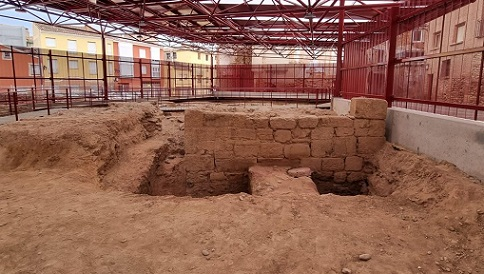

|
CALAGURRIS IULIA NASICA CALAHORRA Los restos arqueológicos más antiguos encontrados en la zona de Calahorra, corresponden al Paleolítico Medio, hace unos cincuenta mil años. Desde entones la presencia y actividad humana en la zona ha sido continua. En el siglo III-II a.e.c. destaca la ciudad celtíbera Kalakorikos que en el año 187 a.e.c. fue conquistada por los romanos. La romana Calagurris, se
situaría en la parte más alta e inaccesible del cerro que hoy ocupa el casco
histórico calagurritano, sobre una elevación próxima en la confluencia del
Ebro y el Cidacos. Esta situación permitía el control de la vía natural de
comunicación del valle del Ebro, y la explotación agrícola de sus fértiles
llanuras.
Otros restos romanos se han hallado en el alfar de La Maja, se trata de cubiletes de cerámica de paredes finas, en los cuales se hace referencia de forma gráfica y escrita a los juegos celebrados en este lugar a comienzos del siglo I. También junto a los jardines de la Era Alta se han ido depositando diversos restos romanos, fustes y basas de columnas, prensas y grandes sillares, destaca un canal de desagüe del circo romano trasladado a éste lugar.
En el denominado yacimiento de la Clínica, las excavaciones sacaron a la luz
los restos de una casa romana construida a finales del siglo I y que tras
diversas remodelaciones fue abandonada en la segunda mitad del siglo III.
Como consecuencia de las primeras invasiones bárbaras a finales del siglo III, hicieron que Calagurris se protegiera con la construcción de una muralla. La Muralla que podemos ver está formada por dos muros paralelos de sillares. Su trazado discurría por la calle San Blas, Justo Aldea, Cavas, Santiago el Viejo, Mayor, San Francisco y San Andrés. El denominado Arco de Planillo se ha atribuido generalmente a época romana, es una de las puertas de entrada a la ciudad amurallada, la única que aún se mantiene en pie.
Son tres los conjuntos hidráulicos relacionados con el abastecimiento de agua a Calagurris: el acueducto de Alcanadre-Lodosa, la presa de La Degollada para uso agrícola y el acueducto de Sierra la Hez. En Calahorra nació arco Fabio Quiintiliano, autor de la Institutio Oratoria, tratado de retórica y pedagogía considerado como un manual para la educación de los romanos. El más conocido de la antigüedad. Nacido hacia el año 35. Galga lo llevó a Roma en su séquito cuando fue proclamado emperador tras la muerte de Nerón. Tuvo gran éxito social y personal. Se convirtió en senador. Vespasiano creó una escuela estatal de retórica que él regentó y Domiciano le encomendó la educación de sus sobrinos. En Calagurris se produjo el martirio de Emeterio y Celedonio patronos de la Ciudad, soldados de las legiones romanas, que fueron martirizados hacia el año 300. En el siglo IV se crea la sede episcopal. En mayo de 2021, en la calle Eras, han salido a la luz los restos de un complejo termal. En el yacimiento arqueológico ‘Las Medranas’, podemos visitar el torreón romano del siglo I y parte de un foso. En mayo de 2022, afloran nuevos restos de la muralla romana. Asimismo, se ha localizado una segunda línea defensiva, también con un foso, que parece corresponder con un torreón de la muralla medieval de la ciudad. Foto: nuevecuatrouno.com

|
.jpg)